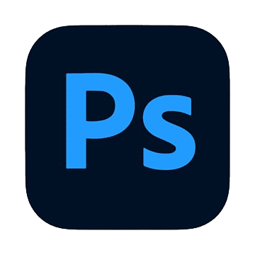
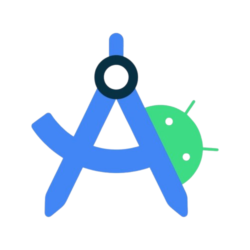
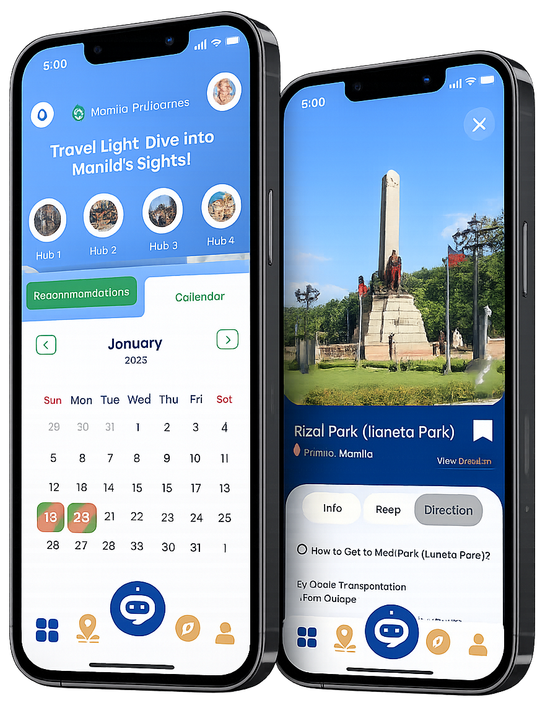
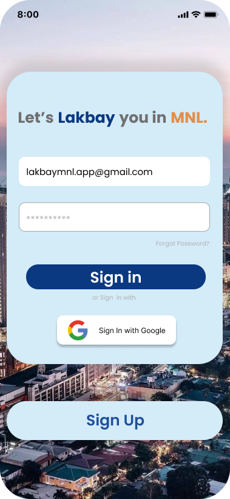
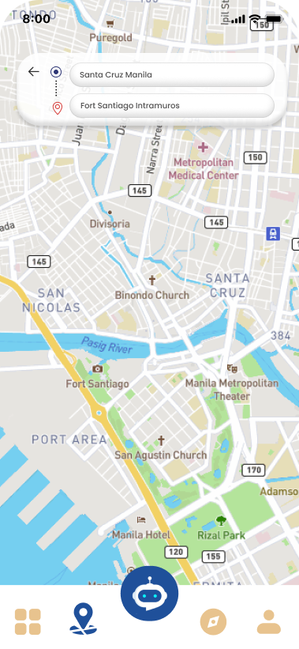
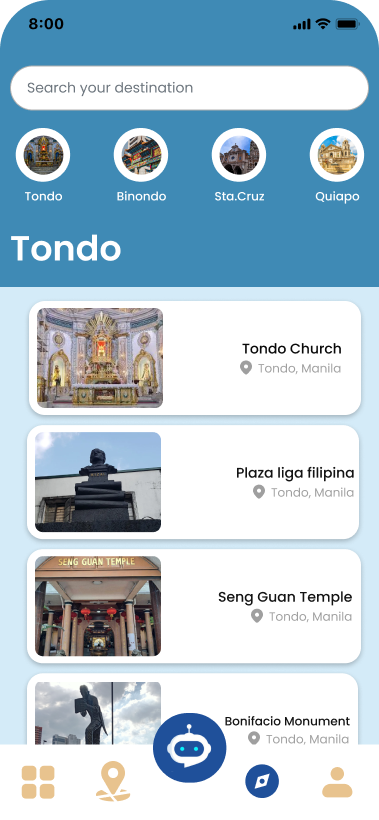
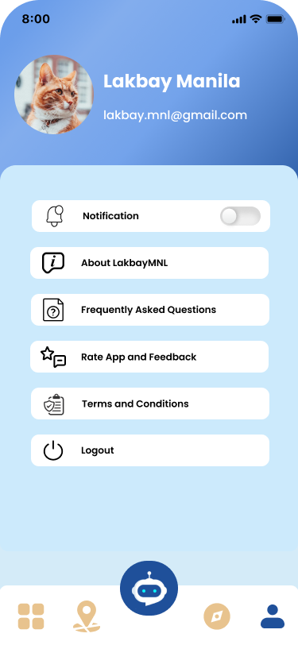
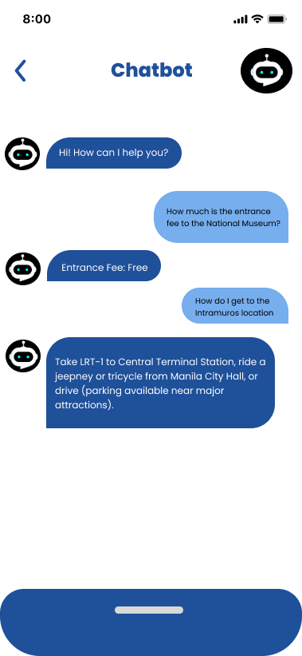

Discover Attractions
Browse famous landmarks, museums, parks, historical sites, and hidden gems around Manila.
A mobile travel guide application that helps tourists and locals discover attractions, transportation, restaurants, and events around Manila through an intuitive, user-friendly experience.




LakbayMNL was designed to simplify travel planning around Manila by bringing attractions, transportation, restaurants, and events into one centralized mobile application with an intuitive user experience.
LakbayMNL is a tourism application created to solve the common problem of fragmented travel information. Instead of switching between multiple websites, users can discover destinations, transportation, restaurants, and events from one convenient platform.
Throughout this project, I focused on creating a user-centered experience by conducting research, organizing information architecture, designing intuitive navigation, and building an interface that feels clean, modern, and easy to use.
Capstone Project
Android
4 Months
Project Manager & UI/UX Designer
Browse famous landmarks, museums, parks, historical sites, and hidden gems around Manila.
Stay updated with festivals, cultural activities, and local events happening across the city.
Access transportation information, travel routes, and commuting guides to make every trip easier.
Bookmark destinations and create your own personalized travel list for future adventures.
Through user research, interviews, and competitor analysis, we identified the biggest pain points travelers experience when exploring Manila and transformed them into opportunities for a better mobile experience.
Existing tourism platforms often provide incomplete, outdated, or scattered information, making it difficult for travelers to confidently plan their trips.
Attractions, transportation, events, and restaurants were spread across different websites and social media pages.
Travelers struggled to locate nearby attractions and understand transportation routes efficiently.
Many tourism websites contained outdated schedules, missing details, and inconsistent travel information.
LakbayMNL centralizes essential travel information into one user-friendly mobile application, allowing travelers to discover destinations faster while enjoying a seamless digital experience.
Attractions, restaurants, transportation, and events are available inside one application.
Clear information architecture and simplified navigation help users find destinations effortlessly.
Administrators can instantly update attractions, announcements, transportation schedules, and tourism information.
Every design decision from navigation structure, typography, spacing, and visual hierarchy was carefully planned to reduce user effort and help travelers access important information as quickly as possible.
Before designing the interface, we conducted user research to understand traveler behaviors, expectations, and pain points. The findings became the foundation of every design decision throughout the project.
Respondents from different age groups who frequently travel within Manila.
The largest respondents group consisted of 25-34 Years olds, with 96 respondents.
253 respondents were Filipino, while 126 were foreign nationals.
The majority of evaluated ISO 9126 criteria received an Excellent rating, demonstrating strong functionality, usability, security, and maintainability.
Research revealed recurring patterns that guided the application's navigation, information hierarchy, and visual design decisions.
Percentage of respondents giving positive ratings
The design process focused on creating a simple, intuitive, and user-centered experience. Every screen was planned through user flows, wireframes, and iterative design improvements before moving into the final interface.
Before creating wireframes, the complete user journey was mapped to ensure every action felt natural and every destination could be reached with minimal effort.


Low-fidelity wireframes allowed different layouts, navigation structures, and interaction patterns to be explored before applying branding and visual design elements.
Every stage built upon the previous one, ensuring that decisions were based on research, usability, and continuous refinement.
Conducted surveys and identified user pain points to understand traveler needs.
Planned navigation paths and organized the overall information architecture.
Created low-fidelity layouts to validate interactions and screen organization.
Applied branding, typography, colors, spacing, and interactive prototypes.
After several design iterations and usability improvements, the final interface focused on clarity, accessibility, consistency, and an enjoyable travel experience.
The dashboard provides quick access to attractions, transportation, nearby places, restaurants, and events while maintaining a clean and modern layout.







Designed with a clear information hierarchy, making destinations easier to discover.
Optimized specifically for Android users with intuitive interactions.
A consistent design system ensures every screen feels familiar and easy to use.
Designing LakbayMNL strengthened my understanding of user-centered design and reinforced the value of research-driven decision making.
Throughout this project I learned how usability testing, user feedback, information architecture, and iterative design all contribute to building meaningful digital experiences.
Beyond designing interfaces, I also gained valuable experience collaborating with a development team, managing project tasks, and presenting design solutions backed by research.